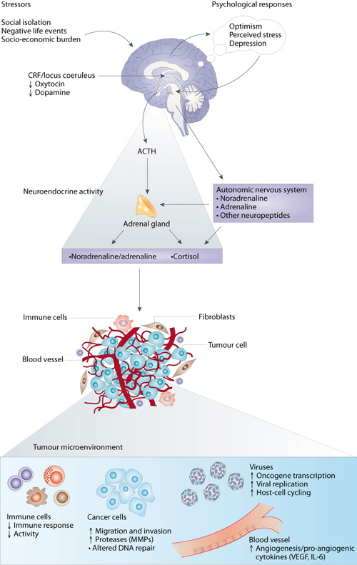

The objective of the BiMPED initiative is to elucidate biological and molecular mechanisms associated with biobehavioral influences on cancer progression.
Managed by the Basic and Biobehavioral Research Branch, BiMPED encourages mechanistic studies to identify biological signaling pathways that might inform how behavioral stress and other influences on tumorigenesis are mediated by the central nervous system.
Our intent is to evaluate and encourage research that explores how neurotransmitters and neuropeptides associated with biobehavioral factors influence tumor processes like angiogenesis, apoptosis, invasion, inflammation, and metastasis.
This initiative encourages transdisciplinary research that bridges basic cancer biology and biobehavioral science to advance our fundamental knowledge of the extent and specificity by which central nervous system-regulated factors like stress, chronic depression, and social support might regulate tumor biology.
Research Agenda
The Basic and Biobehavioral Research Branch supports research in cancer prevention and control supporting research in these areas:
- How broad are the influences of the physiologic stress response on tumor biology?
- Which tumor types (and tumor genomes) are sensitive?
- At which phase of disease are these effects most pronounced (initiation, regression, progression, and/or relapse; during the perioperative period or following surgery?
- What types of biobehavioral factors cause physiological stress responses that are most influential for a given tumor type or stage (e.g., stress, depression, social support, optimism)?
- What biological signaling pathways mediate such influences?
- What specific aspects of tumor biology are affected?
- What endocrine or neurobiological signaling pathways mediate effects of psychosocial factors on tumor biology?
- What is the clinical significance for human disease? How do we translate promising findings from experimental studies to human clinical trials?
Antoni, M. H., Lutgendorf, S. K., Cole, S. W., Dhabhar, F. S., Sephton, S. E., Green, P., et al. (2006). The influence of bio-behavioural factors on tumour biology: pathways and mechanisms. Nat Rev Cancer, 6(3), 240-248

BiMPED Contact Information
Paige Green, PhD, MPH
Branch Chief / Program Director
mcdonalp@mail.nih.gov